| 기업명 | SafeAI |
| 직원 수 | [입력 필요: 직원 수 — 예: 16 명 (SW 개발팀 : 11, 지원 인력 : 5)] |
| 서울(기업부설연구소) | 서울시 서초구 태봉로 114, 3층 |
| 대전(본사) | 대전시 유성구 테크노 4로 17, A동 418호 |
| 룩셈부르크 사무소 | LCI, 9 Rue du Laboratoire, 1911 Gare Luxembourg |
| 이메일 | contact@safeai.kr |
| 홈페이지 | www.safeai.kr |
| 지표 | 기존 | 제안 |
|---|---|---|
| 감지율 | 62% | 94% |
| 오탐률 | 18% | 5% |
| 지표 | 기존 방식 | 제안 방식 | 상태 |
|---|---|---|---|
| 감지 시간 | 다음 날 | 1분 이내 | 달성 |
| 판정 근거 | 없음 | 자동 기록 | 달성 |
| 관제 인원 | 4명 | 2명 | 진행중 |